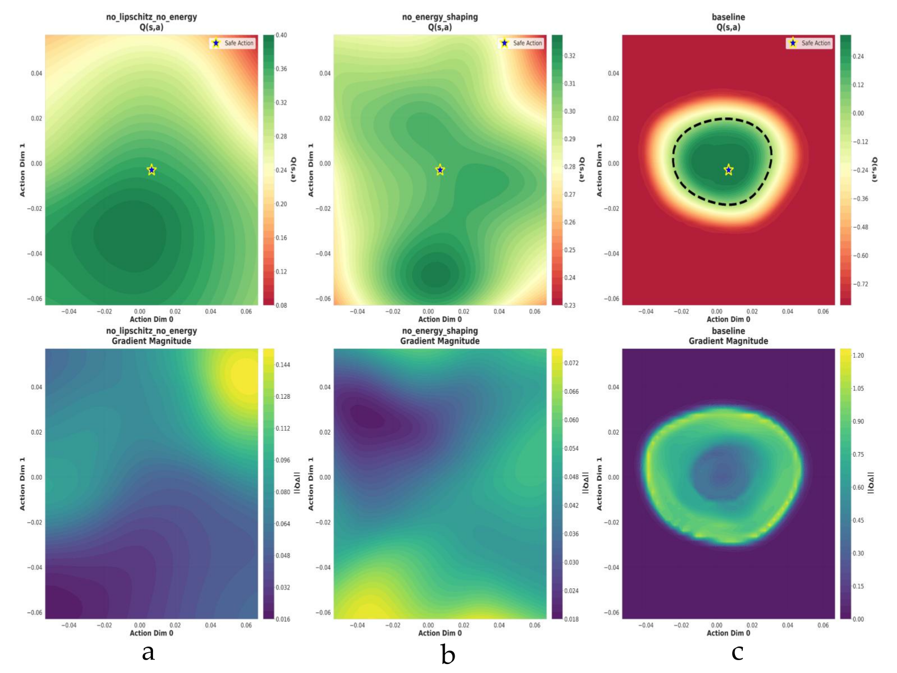
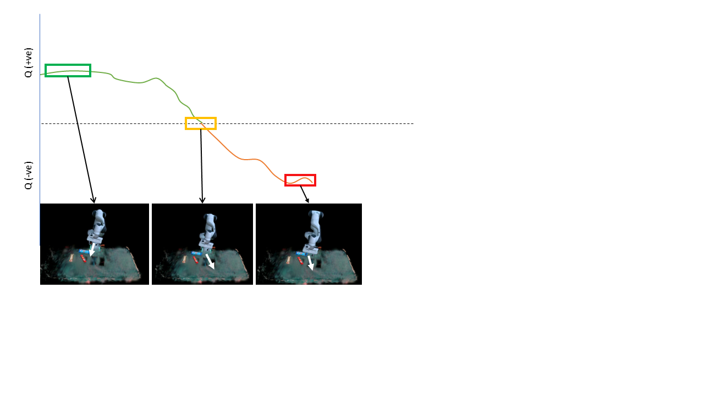
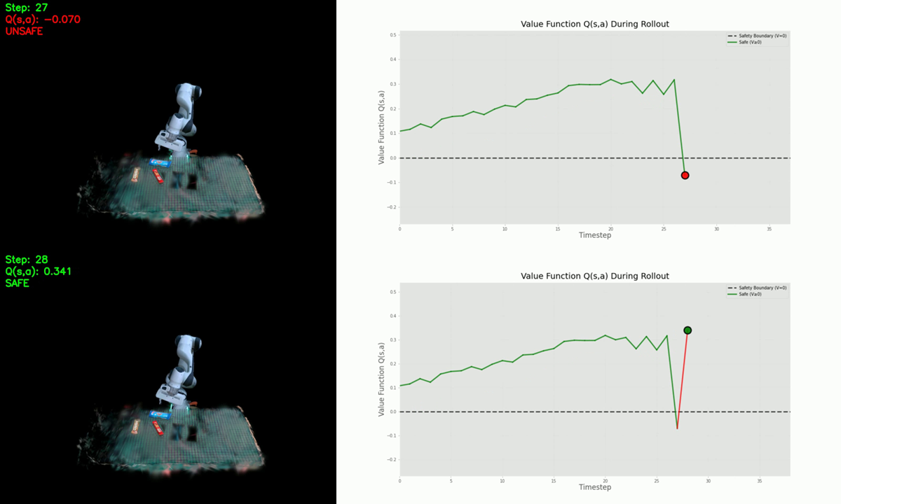
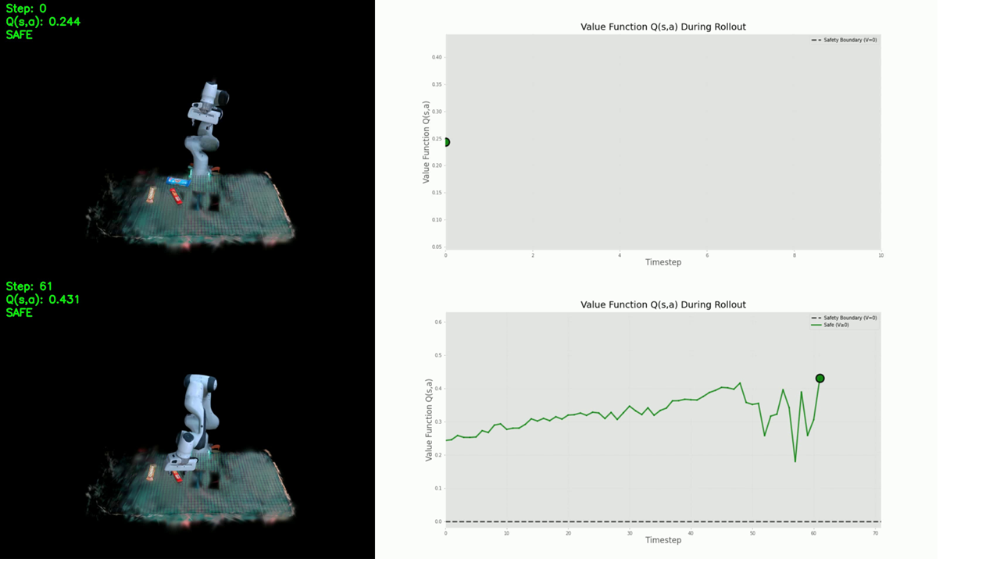
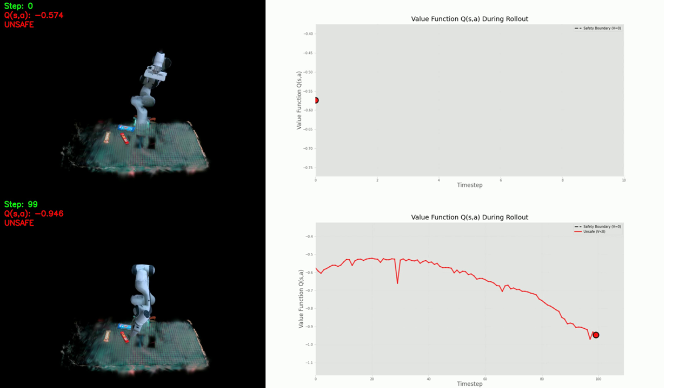
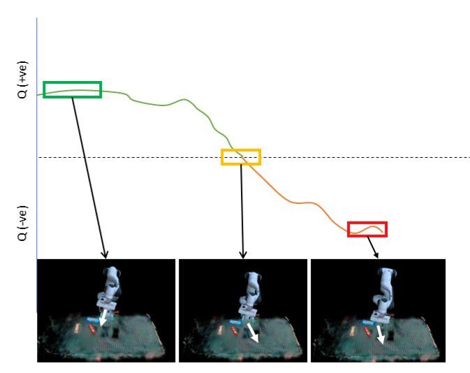
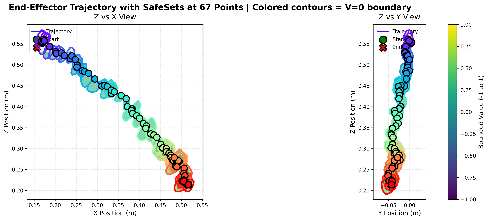

Imitation learning has emerged as a powerful paradigm for training visuomotor policies from human demonstrations, yet deployed policies remain brittle to distribution shift, occlusions, and out-of-distribution scenes that can cause silent failures on real hardware. We present TAIL‑Safe, a task-agnostic safety monitoring framework that learns a continuous safety landscape over a policy's perceptual and action space, enabling real-time detection of unsafe behavior without requiring task-specific cost functions or hand-engineered constraints.
TAIL‑Safe couples a learned energy/value model with a lightweight runtime monitor that scores rollouts as they execute, predicts impending failures from voxelized observations, and triggers recovery primitives when the policy enters high-risk regions of the safety landscape. We evaluate TAIL‑Safe across simulated and real-robot manipulation tasks, including pick-and-place under heavy perturbation, novel object configurations, and adversarial scene changes. Our experiments show that TAIL‑Safe (i) reliably distinguishes safe from unsafe rollouts, (ii) generalizes across tasks without retraining, and (iii) significantly reduces failure rates while preserving the success of the underlying imitation policy.
TAIL‑Safe trains a neural safety landscape — a smooth scalar field over visuomotor latents whose level sets approximate the boundary between safe and unsafe policy executions. At runtime, a monitor projects the current state onto the landscape, computes a value/energy score, and uses its temporal evolution to anticipate failures several steps ahead of when they would actually occur on hardware.


The underlying imitation policy succeeds; TAIL‑Safe stays silent and the value score remains in the safe basin throughout.
Pick-and-place — nominal conditions.
Pick-and-place — perturbed scene.
Sim rollout — episode 10.
Sim rollout — episode 25.
Without any task-specific cost, TAIL‑Safe flags failures of the imitation policy — from missed grasps to drift into out‑of‑distribution scenes.
Failure case 1 — missed grasp.
Failure case 2 — object slip.
Failure case 3 — perturbed pose.
Failure case 4 — OOD distractor.
When the safety monitor detects a high-risk state, TAIL‑Safe hands control to a recovery primitive that returns the system to a safe basin before resuming the policy.
Recovery in simulation.
Recovery on real robot.
Recovery under perturbation.

Stress tests with novel objects, occlusions, and adversarial scene changes.
Extreme OOD case A.
Extreme OOD case B.
Real‑robot deployments captured during physical evaluation.
Real-robot run 1.
Real-robot run 2.
Real-robot run 3.




@inproceedings{ahmed2026tailsafe,
title = {TAIL-Safe: Task-Agnostic Safety Monitoring for Imitation Learning Policies},
author = {Ahmed, Riad and Begum, Momotaz},
booktitle = {Proceedings of Robotics: Science and Systems (RSS)},
year = {2026}
}